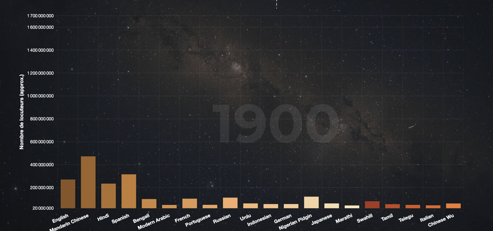
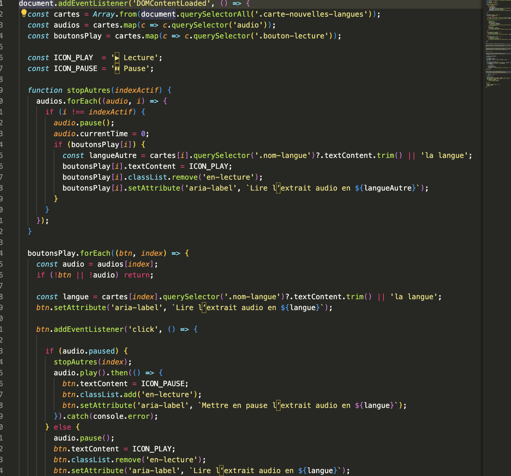

Orbis
DataVisualisation Interactive & Langages
Le Concept
Orbis est une expérience immersive de visualisation de données traitant de l'évolution des langues parlées et des langages disparus de 1900 à 2025. À travers un univers visuel inspiré par l'espace et le voyage temporel, nous avons rendu accessible une base de données complexe sur le patrimoine linguistique mondial.

Analyse des Données
Le projet s'appuie sur des sources institutionnelles telles que l'Atlas UNESCO des langues en danger et Ethnologue. Nous avons extrait et structuré ces données pour mettre en lumière le phénomène d'extinction linguistique et la montée en puissance de certains langages mondiaux.

Développement Technique
Réaliser en HTML, CSS et JavaScript pour transformer des bases de données complexes en graphiques lisibles. Le code permet ici de lier chaque chiffre à un élément visuel, créant une interface où l'exploration des langues devient fluide et interactive.
